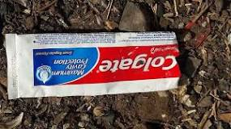

¿Cuáles son los materiales que no se pueden reciclar?
Servilletas de papel usadas, caja de pizza manchada, tarrina de helado de cartón... Los papeles o cajas de cartón manchadas, con grasa de los alimentos por ejemplo, no se pueden echar al contenedor azul porque perjudicaría el proceso de reciclaje del resto de papel y cartón limpio.